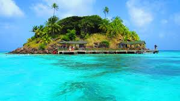
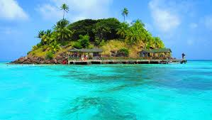

Parque Nacional del Chicamocha
El Parque Nacional del Chicamocha, consolidado como uno de los lugares turísticos más importantes de Colombia, ubicado en el lugar más imponente de Santander, el Cañón del Chicamocha. Es un majestuoso lugar en perfecta armonía con la naturaleza. Ubicado en jurisdicción del municipio de Aratoca, en la vía que comunica a Bucaramanga con San Gil a una distancia aproximada de 50 minutos, es un verdadero atractivo turístico; y lo es, porque encontrar en un mismo lugar ecoturismo, deportes extremos, diversión, turismo recreativo, gastronomía, y toda la cultura santandereana, sus raíces y su historia, sólo es posible en este sitio, creado para el disfrute de todas las familias de la región, del país y de todos los visitantes extranjeros. Su Teleférico, es la obra insignia, ya que es el único en el mundo que recorre un cañón. Un sistema de 39 cabinas cerradas con capacidad para ocho personas cada una, transporta 500 personas en una hora. Fue construido con tecnología de punta y anualmente validamos el procedimiento para obtener la Certificación de Calidad Internacional V1, que se otorga a los sistemas por cable, como la máxima garantía de seguridad y confiabilidad a escala mundial.
El Parque, se ha convertido en el ícono de Santander y el núcleo donde convergen todos los valores del departamento. Su arquitectura, colores y gastronomía, así como lo más representativo de cada provincia unida a las muestras culturales y folclóricas de sus municipios, al igual que las ferias y los festivales realizados allí, han hecho de este mágico lugar, un epicentro de unión y fortaleza para los santandereanos. El Parque Nacional del Chicamocha es el primer parque de identidad regional en Colombia y en Latinoamérica certificado en gestión ambiental ISO 14001:2004 en Servicios Culturales y Turísticos, que lo define como un parque amigable con la naturaleza.
Perfil del autor
Nir Offir. Bloguero (usuario de blog) israelí, fue quien propuso desde el año 2005 que el 31 de agosto fuera declarado el Día internacional del blog (aprovechando la similitud de la fecha 3108 con la palabra Blog), en esta fecha, los blogueros que desarrollaban bitácoras personales enviaran cinco invitaciones de cinco blogs de diferentes temáticas a cinco diferentes contactos, para que así los internautas dieran difusión a blogs que seguramente otras personas desconocían, y que eventualmente les pudiera resultar interesantes. También él es uno de los cofundadores del blogtv.com, una plataforma de trasmisión en vivo, social que permite a cualquiera crear su propio canal de televisión en la web y móvil.
Deja tu comentario
Caño Cristales
Caño Cristales es un río de Colombia que está ubicado en la sierra de la Macarena, en el municipio del mismo nombre, en el departamento del Meta. Ha sido denominado «el río de los dioses», «el río de los siete colores», «el arco iris que se derritió» e incluso «el río más hermoso del mundo»1 ya que en su fondo se reproducen plantas acuáticas que con la exposición al sol cambian sus colores en un proceso que va desde el verde hasta un rojo intenso, lo que produce la sensación de estar frente a un río de seis colores: rojo, amarillo, verde , negro , azul y rosado principalmente.
Siendo un río de menor longitud y anchura, el Caño Cristales no alcanza los 100 km de longitud ni sobrepasa los 20 m de ancho. Es una sucesión de rápidos, cascadas, correones y pocetas cuyas aguas se desprenden de la meseta sur de la serranía de la Macarena, donde se ubica su nacimiento, a espaldas de los más antiguos tepuyes de la Sierra en una zona escarpada en la que se encuentran numerosas pinturas rupestres aún inexploradas. Esas aguas, de tal pureza que permiten ver el fondo y toda la magia que encierra este hermoso río, corren hacia el río Guayabero recogiendo a su paso innumerables brazuelos de las sabanas rocosas de la Sierra. El caño desemboca sin sus colores característicos pues estos se han perdido en la vereda La Cachivera, a la altura del camino real —hoy en día, una carretera— que lo atraviesa.
Perfil del autor
Michelle Malkin. Es una americana bloguera conservadora estadounidense comentarista política y autora, su columna semanal sindicada aparece en una serie de periódicos y sitios web. Ella es una FOX NEWS canal contribuyente y ha sido invitada a la cadena MSNBC, C-SPAN, y los programas nacionales de radio. En junio de 2004 se ha puesto en marcha politique blog, michellemalkin.com. Una nota de 2007 del comité republicano nacional describió a malkin como una de las cinco mejores "de leer los bloggers nacionales conservadores", y filas de technorati michellemalkin.com constantemente las TIC en el "top 100 blogs de todo tipo". La compañía de búsqueda de personas peekyou dice malkin tiene la huella más grande politique digital de cualquier blogger.